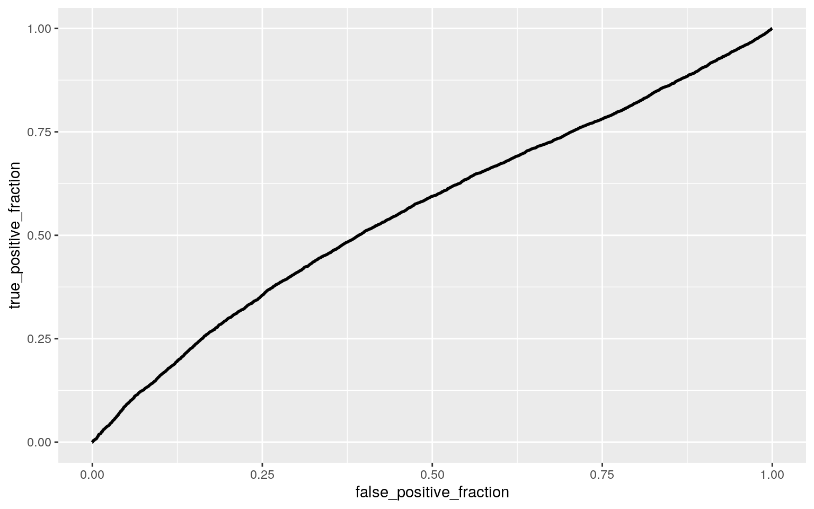

In this project I looked into a data set that contained personal information about individuals who had contact with medical doctors from 1977 to 1978. The data set didn’t specify what country the information was collected from. Although there are many interesting variables that I think would be interesting to see interactions with, I chose to only focus on the ones that I deem more important. I primarily focused on the number of visits to an outpatient doctor (mdu), age of the individual, health of the individual, and the sex of the individual. There are other variables that recorded income and family size that I think would be cool to look at, but for the sake of this project I decided not to focus on these (yet). I was working with 20,186 observations in this project.
DoctorContacts <- read.csv("DoctorContacts.csv")
DCs <- DoctorContacts %>% select(-lc, -idp, -lpi, -fmde, -child, -black)
head(DCs)## X mdu physlim ndisease health linc lfam educdec age sex
## 1 1 0 FALSE 13.73189 good 9.528776 1.386294 12 42.87748
male
## 2 2 2 FALSE 13.73189 good 9.528776 1.386294 12 43.87748
male
## 3 3 0 FALSE 13.73189 good 9.528776 1.386294 12 44.87748
male
## 4 4 0 FALSE 13.73189 good 9.528776 1.386294 12 45.87748
male
## 5 5 0 FALSE 13.73189 good 9.528776 1.386294 12 46.87748
male
## 6 6 0 FALSE 13.73189 excellent 9.528776 1.386294 12
16.59138 maleMANOVA TEST
manova.1 <- manova(cbind(mdu, age) ~ health, data = DCs)
summary(manova.1)## Df Pillai approx F num Df den Df Pr(>F)
## health 3 0.084958 298.45 6 40364 < 2.2e-16 ***
## Residuals 20182
## ---
## Signif. codes: 0 '***' 0.001 '**' 0.01 '*' 0.05 '.' 0.1
' ' 1summary.aov(manova.1)## Response mdu :
## Df Sum Sq Mean Sq F value Pr(>F)
## health 3 4253 1417.68 70.583 < 2.2e-16 ***
## Residuals 20182 405359 20.09
## ---
## Signif. codes: 0 '***' 0.001 '**' 0.01 '*' 0.05 '.' 0.1
' ' 1
##
## Response age :
## Df Sum Sq Mean Sq F value Pr(>F)
## health 3 444702 148234 571.98 < 2.2e-16 ***
## Residuals 20182 5230352 259
## ---
## Signif. codes: 0 '***' 0.001 '**' 0.01 '*' 0.05 '.' 0.1
' ' 1DCs %>% group_by(health) %>% summarize(mean(mdu), mean(age))## # A tibble: 4 x 3
## health `mean(mdu)` `mean(age)`
## <fct> <dbl> <dbl>
## 1 excellent 2.63 21.8
## 2 fair 3.69 33.7
## 3 good 2.90 29.2
## 4 poor 5.79 43.2pairwise.t.test(DCs$mdu, DCs$health, p.adj = "none")##
## Pairwise comparisons using t tests with pooled SD
##
## data: DCs$mdu and DCs$health
##
## excellent fair good
## fair < 2e-16 - -
## good 7.7e-05 2.7e-10 -
## poor < 2e-16 8.9e-14 < 2e-16
##
## P value adjustment method: nonepairwise.t.test(DCs$age, DCs$health, p.adj = "none")##
## Pairwise comparisons using t tests with pooled SD
##
## data: DCs$age and DCs$health
##
## excellent fair good
## fair <2e-16 - -
## good <2e-16 <2e-16 -
## poor <2e-16 <2e-16 <2e-16
##
## P value adjustment method: none1-.95^4## [1] 0.18549380.05/4## [1] 0.0125I ran a MANOVA test to determine if the number of outpatient visits to a doctor and age vary across an individual’s health (excellent, good, fair, poor). The MANOVA that I ran shows that there is indeed a significant difference. Upon running univariate ANOVAs, it was determined that both number of doctor visits and age are significantly different across health groups on their own. Because of this, I ran a post-hoc test on both variables to determine specifically what groups are the ones that differ. The post-hoc test showed that there is a significant difference between all groups (excellent, good, fair, poor) of an individual’s health.
I performed a total of four tests (two ANOVA tests and two t-tests), which means there is an 18.54938% chance there is at least one Type 1 error present. In addition, the Bonferroni correction was calculated to be 0.0125. My data likely meets most of the MANOVA assumptions as it is random and not obtained from surveys. The independent variable is categorical while the dependent variable is continuous, so this means the data meets another MANOVA assumption. It also appears that variance between groups is equal as the data was collected from a random sample. Finally, I would think that age and number of doctor visits have some sort of linear relationship with the health of an individual.
2. RANDOMIZATION
m.visits <- DCs %>% filter(sex %in% c("male")) %>% select(mdu)
m.visits <- as.vector(t(m.visits))
f.visits <- DCs %>% filter(sex %in% c("female")) %>% select(mdu)
f.visits <- as.vector(t(f.visits))
visits <-data.frame(sex=c(rep("male visits",9751), rep("female visits",10435)), mdu = c(m.visits, f.visits))
head(visits)## sex mdu
## 1 male visits 0
## 2 male visits 2
## 3 male visits 0
## 4 male visits 0
## 5 male visits 0
## 6 male visits 0ggplot(visits, aes(mdu, fill=sex)) + geom_histogram(bins=5) + facet_wrap(~sex, ncol=2) + theme(legend.position = "none")DCs %>% group_by(sex) %>% summarize(means=mean(mdu)) %>% summarize(`mean_diff:`=diff(means))## # A tibble: 1 x 1
## `mean_diff:`
## <dbl>
## 1 -0.830head(perm1<-data.frame(sex = visits$sex, mdu = sample(visits$mdu)))## sex mdu
## 1 male visits 6
## 2 male visits 9
## 3 male visits 0
## 4 male visits 8
## 5 male visits 2
## 6 male visits 4perm1 %>% group_by(sex) %>% summarize(means=mean(mdu)) %>% summarize(`mean_diff:`=diff(means))## # A tibble: 1 x 1
## `mean_diff:`
## <dbl>
## 1 -0.129rand.dist<-vector()
for(i in 1:5000){
new <- data.frame(mdu = sample(visits$mdu), sex = visits$sex)
rand.dist[i] <- mean(new[new$sex == "male visits",]$mdu) - mean(new[new$sex == "female visits",]$mdu)}
{hist(rand.dist, main = "", ylab = ""); abline(v = -0.8297731, col="red")}pairwise.t.test(DCs$mdu, DCs$sex, p.adj = "none")##
## Pairwise comparisons using t tests with pooled SD
##
## data: DCs$mdu and DCs$sex
##
## female
## male <2e-16
##
## P value adjustment method: nonemean(rand.dist>0.8297731)*2## [1] 0I performed a randomization test between sex, either male which was named “m.visits” or female which I named “f.visits”, and the number of outpatient doctor visits. The null hypothesis is that the number of outpatient doctor visits is the same for males and females. The alternative hypothesis is that the number of outpatient doctor visits is different between males and females. I calculated the mean difference to be -0.8297731 by using the original data. I then randomized my data and placed a red line at -0.8297731 in the newly formed histogram. The red line is actually far off the to the left of the graph because there are no mean differences which are as extreme as the mean difference that I calculated using the original data. This was confirmed by the t-test which found the p-value to be essentially 0. This means that we can safely reject the null hypothesis and state that there is a significant difference in the number of outpatient doctor visits between males and females.
3. LINEAR REGRESSION
#linear regression
DCs$mdu_c <- DCs$mdu - mean(DCs$mdu)
DCs$age_c <- DCs$age - mean(DCs$age)
fit<-lm(mdu_c~age_c*sex, data= DCs)
summary(fit)##
## Call:
## lm(formula = mdu_c ~ age_c * sex, data = DCs)
##
## Residuals:
## Min 1Q Median 3Q Max
## -4.851 -2.423 -1.384 0.658 73.544
##
## Coefficients:
## Estimate Std. Error t value Pr(>|t|)
## (Intercept) 0.363319 0.043674 8.319 <2e-16 ***
## age_c 0.043069 0.002593 16.607 <2e-16 ***
## sexmale -0.788804 0.062846 -12.551 <2e-16 ***
## age_c:sexmale -0.039356 0.003749 -10.497 <2e-16 ***
## ---
## Signif. codes: 0 '***' 0.001 '**' 0.01 '*' 0.05 '.' 0.1
' ' 1
##
## Residual standard error: 4.455 on 20182 degrees of
freedom
## Multiple R-squared: 0.02193, Adjusted R-squared: 0.02178
## F-statistic: 150.8 on 3 and 20182 DF, p-value: < 2.2e-16t.test(data=DCs,mdu_c~sex,var.eq=T)##
## Two Sample t-test
##
## data: mdu_c by sex
## t = 13.133, df = 20184, p-value < 2.2e-16
## alternative hypothesis: true difference in means is not
equal to 0
## 95 percent confidence interval:
## 0.7059324 0.9536139
## sample estimates:
## mean in group female mean in group male
## 0.4008282 -0.4289449ggplot(DCs, aes(x=age_c, y=mdu_c, group=sex)) + geom_point(aes(color = sex)) + geom_smooth(method = "lm", formula = y~1,se=F,fullrange = T,aes(color = sex)) + theme(legend.position = c(.945,.91)) + xlab("Age_C")For the linear regression I tried to predict the number of outpatients doctor visits based on the age and the sex of an individual. I also looked at the interactions between the variables. All of the coefficients from the fit test are significant. The results show that the number of outpatients doctor visits increases by 0.043069 every year of age. The test also shows that male individuals have a lower doctor visitation rate by 0.788804 visits/age when compared to females. Additionally, it was determined that the slope for the effect of age on doctor visits is 0.039356 units lower than the slope for the same interaction with the opposite sex.
n_set<-DCs
n_set$age_c <- mean(DCs$age_c)
n_set$mean <- predict(fit, n_set)
n_set$age_c <- mean(DCs$age_c)+sd(DCs$age_c)
n_set$plus_sd <- predict(fit, n_set)
n_set$age_c <- mean(DCs$age_c)-sd(DCs$age_c)
n_set$minus_sd <- predict(fit, n_set)
my.colors<-c("#FF0000","#0000FF","#33CC66")
names(my.colors) <- c("-1 sd","mean","+1 sd")
my.colors = as.factor(my.colors)
#Interaction Plot
ggplot(DCs, aes(mdu_c, age_c), group = my.colors) + geom_point(color = "#999999") + geom_line(data = n_set, aes(y = mean, color="mean")) + geom_line(data = n_set, aes(y = plus_sd, color = "+1 sd")) + geom_line(data = n_set, aes(y = minus_sd, color="-1 sd")) + scale_color_manual(values = my.colors) + labs(color = "Deviation") + theme(legend.position=c(.94,.13))Upon plotting the interaction, I was given this very unique graph. The graph looks like this way because the values of number of visits does not vary much. This is why the points are super concentrated on the left side of the graph. Unfortunately, I am not able to discern much from simply looking at this ugly graph.
res_vals <- lm(mdu_c ~ age_c*sex, data = DCs)$residuals
fitted <- lm(mdu_c ~ age_c*sex, data = DCs)$fitted.values
res_vals <- fit$residuals
fit_vals <- fit$fitted.values
#Checks for homoskedasticity and linearity
ggplot() + geom_point(aes(fit_vals, res_vals)) + geom_hline(yintercept = 0, color = 'orange')Upon checking for homoskedacity and linearity I found that the plot exibits heteroskadacity and is not linear.
ggplot() + geom_qq(aes(sample=res_vals)) + geom_qq_line(aes(sample = res_vals, color = "red"))ggplot() + geom_histogram(aes(res_vals), bins = 20)ks.test(res_vals, "pnorm", mean=0, sd(res_vals)) ##
## One-sample Kolmogorov-Smirnov test
##
## data: res_vals
## D = 0.19205, p-value < 2.2e-16
## alternative hypothesis: two-sidedThe plots and the “ks test” show that the data is most definitely not normal. The histogram is skewed. The qq-plot shows how the points don’t follow a line, but instead curve exponentially. The ks test shows that the D value is 0.19205 and has a significant p-value and we must reject the null that states that my data is normal.
robust_fit <- lm(mdu_c ~ age_c*sex, data = DCs)
bptest(robust_fit)##
## studentized Breusch-Pagan test
##
## data: robust_fit
## BP = 54.693, df = 3, p-value = 7.985e-12summary(robust_fit)$coef[,1:2]## Estimate Std. Error
## (Intercept) 0.36331934 0.043674171
## age_c 0.04306873 0.002593389
## sexmale -0.78880424 0.062845658
## age_c:sexmale -0.03935624 0.003749449coeftest(robust_fit, vcov = vcovHC(robust_fit))[,1:2]## Estimate Std. Error
## (Intercept) 0.36331934 0.046327657
## age_c 0.04306873 0.003094622
## sexmale -0.78880424 0.061933857
## age_c:sexmale -0.03935624 0.004349735The results of the Breusch-Pagan test gave a p-value of less than 0.05, therefore we can safely reject the null hypothesis. This means that my data is heteroskedastic. When using the robust standard error, you can see that the standard error of the intercept, the age, and the interaction increased while the standard error for the male sex decreased.
(sum((DCs$mdu_c - mean(DCs$mdu_c))^2) - sum(fit$residuals^2)) / sum((DCs$mdu_c - mean(DCs$mdu_c))^2)## [1] 0.02192988My model explains 2.19% of the variation in the outcome.
4. BOOTSTRAPPING
set.seed(500)
boot_dat <- sample_frac(DCs, replace=T)
samp_distn <- replicate(5000, {
boot_dat <- sample_frac(DCs, replace=T)
boot_fit <- lm(mdu_c ~ age_c*sex, data = boot_dat)
coef(boot_fit)
})
samp_distn %>% t %>% as.data.frame %>% summarize_all(sd)## (Intercept) age_c sexmale age_c:sexmale
## 1 0.04633015 0.003121891 0.06275036 0.004353109The bootstrapped standard errors were 0.04633015 for the intercept, 0.003121891 for the age, 0.06275036 for the male sex, and 0.004353109 for the interaction between age and the male sex. All of these standard errors appear to be very close but slightly greater than the robust errors. The bootstrap standard errors will likely have a p-value of less than 0.05 just like the robust standard errors because they are so similar. The original standard errors were 0.043674171 for the intercept, 0.002593389 for the age, 0.062845658 for the male sex, and 0.003749449 for the interaction. These standard errors are all much smaller than the bootstrap standard errors that were just found.
5. LOGISTIC REGRESSION
DCs <- DCs %>% mutate(Sex = ifelse(sex == "male", 0, 1))
fit_2 <- glm(Sex ~ age + mdu, data=DCs, family = "binomial")
coeftest(fit_2)##
## z test of coefficients:
##
## Estimate Std. Error z value Pr(>|z|)
## (Intercept) -0.19480816 0.02711190 -7.1853 6.704e-13 ***
## age 0.00543123 0.00085121 6.3806 1.764e-10 ***
## mdu 0.04414244 0.00365067 12.0916 < 2.2e-16 ***
## ---
## Signif. codes: 0 '***' 0.001 '**' 0.01 '*' 0.05 '.' 0.1
' ' 1exp(coef(fit_2))## (Intercept) age mdu
## 0.8229925 1.0054460 1.0451312The estimates for the intercept coefficient is -0.19480816, 0.00543123 for the age coefficient, and 0.04414244 for the mdu coefficient. All three of these coefficients are significant, so we can safely reject the null hypothesis that states there is not a significant relationship between the variables.
prob <- predict(fit_2, type = "response")
predict <- ifelse(prob > .5, 1, 0)
table(prediction = predict, truth = DCs$Sex) %>% addmargins()## truth
## prediction 0 1 Sum
## 0 4749 4142 8891
## 1 5002 6293 11295
## Sum 9751 10435 20186#accuracy
(4749 + 6293) / 20186## [1] 0.5470128#sensitivity (TPR)
4749 / 8891## [1] 0.5341356#specificity (TNR)
6293 / 11295## [1] 0.5571492#precision (PPV)
4749 / 9751## [1] 0.487027The accuracy was calculated to be 54.70%, the TPR is 53.41%, the TNR is 55.71% and the PPV is 48.70%. All of these values are roughly around 50%, therefore I can say that my model will accurately calculate true positive and negative rates only about half of the time. The other half it will be incorrect. In addition, since the precision is 48.70%, the age and the number of outpatient visits will only be categorized into the correct sex less than half of the time.
DCs$logit <- predict(fit_2, type = "link")
ggplot(DCs, aes(logit, fill = as.factor(Sex))) + geom_density(alpha = .3) +
theme(legend.position = c(.63, .85))+ geom_vline(xintercept = 0) + xlab("predictor (logit)")This graph depicts exactly what I talked about earlier. The two curves overlap a lot, which means that the model is not very good. This means that a large majority of ages and doctor visits are incorrectly categorized into sex.
ROCplot <- ggplot(DCs) + geom_roc(aes(d = Sex, m = prob), n.cuts = 0)
ROCplot
calc_auc(ROCplot)## PANEL group AUC
## 1 1 -1 0.5623953The ROC plot has an AUC of 0.5623953, which is very slightly about 0.5. This bad AUC is consistent with the previous graph as well. This is also indicative of a poor model that will likely incorrectly categorize an individual’s observations into the wrong sex.
class_diag <- function(probs, truth){
tab <- table(factor(probs > .5, levels=c("FALSE", "TRUE")), truth)
acc = sum(diag(tab)) / sum(tab)
sens=tab[2,2]/colSums(tab)[2]
spec=tab[1,1]/colSums(tab)[1]
ppv=tab[2,2]/rowSums(tab)[2]
if(is.numeric(truth)==FALSE & is.logical(truth)==FALSE) truth<-as.numeric(truth)-1
ord<-order(probs, decreasing=TRUE)
probs <- probs[ord]; truth <- truth[ord]
TPR=cumsum(truth)/max(1,sum(truth))
FPR=cumsum(!truth)/max(1,sum(!truth))
dup<-c(probs[-1]>=probs[-length(probs)], FALSE)
TPR<-c(0,TPR[!dup],1); FPR<-c(0,FPR[!dup],1)
n <- length(TPR)
auc<- sum( ((TPR[-1]+TPR[-n])/2) * (FPR[-1]-FPR[-n]) )
data.frame(acc,sens,spec,ppv,auc)
}
class_diag(prob, DCs$Sex)## acc sens spec ppv auc
## 1 0.5470128 0.6030666 0.487027 0.5571492 0.5624019set.seed(500)
k=10
data <- DCs[sample(nrow(DCs)), ]
folds <- cut(seq(1:nrow(DCs)), breaks=k, labels = F)
diags <- NULL
for(i in 1:k){
train <- data[folds!=i, ]
test <- data[folds==i, ]
truth <- test$Sex
fit5 <- glm(Sex ~ age + mdu, data = train, family = "binomial")
probs <- predict(fit5, newdata = test, type="response")
diags <- rbind(diags, class_diag(probs, truth))
}
summarize_all(diags,mean)## acc sens spec ppv auc
## 1 0.5483029 0.6047739 0.4891591 0.5590492 0.5623469The 10-fold CV returned 0.5483029 for accuracy, 0.6047739 for sensitivity, and 0.4891591 for specificity. The AUC was also found to be 0.5623469. All of these values are very similar to the originals shown above.
6. LASSO
DC_2 <- DCs %>% select(-mdu_c, -age_c, -logit, -sex)
head(DC_2)## X mdu physlim ndisease health linc lfam educdec age Sex
## 1 1 0 FALSE 13.73189 good 9.528776 1.386294 12 42.87748
0
## 2 2 2 FALSE 13.73189 good 9.528776 1.386294 12 43.87748
0
## 3 3 0 FALSE 13.73189 good 9.528776 1.386294 12 44.87748
0
## 4 4 0 FALSE 13.73189 good 9.528776 1.386294 12 45.87748
0
## 5 5 0 FALSE 13.73189 good 9.528776 1.386294 12 46.87748
0
## 6 6 0 FALSE 13.73189 excellent 9.528776 1.386294 12
16.59138 0y <- as.matrix(DC_2$Sex)
x <- model.matrix(Sex ~ ., data = DC_2) [,-1]
x <- scale(x)
cv <- cv.glmnet(x, y)
lasso <- glmnet(x, y, family = "binomial", lambda = cv$lambda.1se)
coef(lasso)## 12 x 1 sparse Matrix of class "dgCMatrix"
## s0
## (Intercept) 0.075353518
## X 0.032435454
## mdu 0.072729989
## physlimTRUE .
## ndisease 0.372160888
## healthfair .
## healthgood 0.016295863
## healthpoor .
## linc -0.040841880
## lfam -0.003195794
## educdec .
## age .class_diag(prob, DC_2$Sex)## acc sens spec ppv auc
## 1 0.5470128 0.6030666 0.487027 0.5571492 0.5624019set.seed(500)
k = 10
data <- DC_2[sample(nrow(DC_2)),]
folds <- cut(seq(1:nrow(DC_2)), breaks = k, labels = F)
diags <- NULL
for(i in 1:k){
train <- data[folds != i,]
test <- data[folds == i,]
truth <- test$Sex
fit6 <- glm(Sex ~ ., data = train, family = "binomial")
probs <- predict(fit6, newdata = test, type = "response")
diags <- rbind(diags, class_diag(probs, truth))
}
summarize_all(diags, mean) ## acc sens spec ppv auc
## 1 0.5777772 0.6113416 0.5420925 0.5882435 0.6208999The output from this test suggests that number of chronic diseases is by far the most predictive variable for sex. This is followed by the number of outpatient doctor visits. The CV gave me almost identical values to that of the logistic regression test.